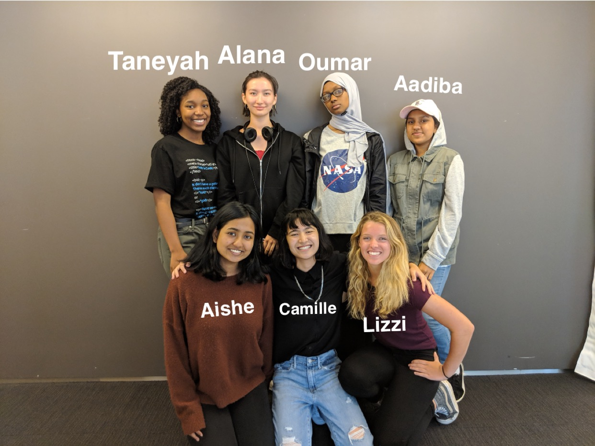

Camille Villapaz
Camille Villapaz is a 16 year-old from Queens, New York. She is a student at Archbishop Molloy
High School. Her hobbies/ interests include video games, reading, and writing.
She plans to go into the field of computer science in the future.
Tanéyah Jolly
Tanéyah Jolly is a 16 year-old student at Northfield Mount Hermon. She enjoys
playing Ultimate Frisbee and Soccer, and also enjoys taking part in different
community activites.
Oumar Baro
Oumar Baro is 17 year-old from the Bronx and goes to Pace Highschool.
Her hobbies include reading and watching Netflix.
Her future plans are to study abroad in the Middle East.
Aadiba Haque
Aadiba Haque is 17-year-old born in Bangladesh. She is from Queens and
goes to Queens Gateway to Health Sciences Secondary School. She loves to
help others, travel, spend time with her loved ones, and watch Korean dramas/ Bollywood movies.
Alan-Goa Petushova
Alan-Goa Petushova is a Russian born 17 year-old. She goes to LaGuardia High School,
where she is taking classes in hope to pursue a career in art and technology.
Elizabeth Sullivan
Elizabeth Sullivan is a 17 year-old from Rumson, New Jersey. She spends her
time outdoors surfing and playing lacrosse. She enjoys computer science and
wants to pursue a career in tech in the future.
Aishe Sammader
Aishe Samadder is a Bengali born 16-year old who currently resides in Yonkers
and goes to Yonkers High School. She spends most of her time leading her school's
robotics team. In her free time, she enjoys watching Netflix, drawing and reading.
Georgia Essig
Georgia Essig is a student at Columbia University and majors in computer science
and Russian language culture. She is a teacher at Girls Who Code, and she is a co-teacher
at Columbia for a coding club.
Mary Jackson
Mary Jackson, born April 9th, 1921, in Hampton, Virginia was our inspiration for this website. She was the first African American female engineer at NASA and helped America win the space race. After retiring from engineering, she became the manager of a women's project at NASA and worked to improve the opportunities for all women in NASA. Being such a inspiring woman and working hard to raise awareness about gender issues in NASA and helping women gain opportunities motivates us to also use our skills to raise awareness and for social causes.